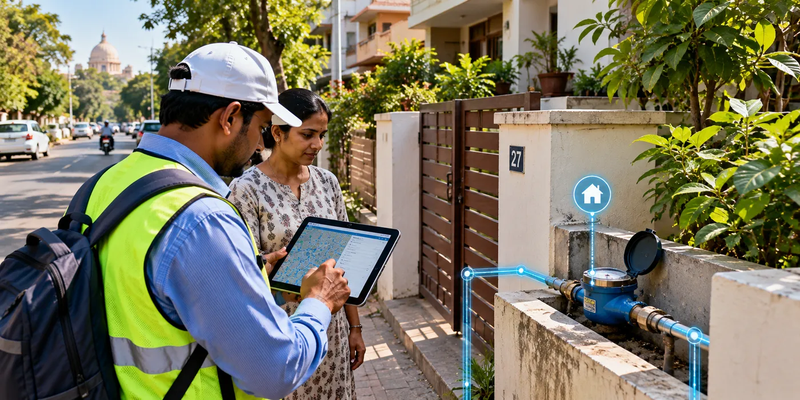

The Assignment
Nagpur Municipal Corporation required a comprehensive consumer survey and water audit to assess the performance of the city's water supply system, understand Non-Revenue Water (NRW), identify unauthorized connections and support more efficient water distribution planning.
The assignment covered a large urban water network serving approximately 24 lakh people and required detailed assessment of consumers, system boundaries, water-supply entry points and District Metered Areas (DMAs).
Our Approach
CS TECH Ai carried out an integrated consumer survey and water audit across the municipal water supply system, combining field-level consumer information with systematic assessment of the distribution network.
The engagement included:
- Consumer survey covering 1.1 lakh properties
- Water audit and NRW assessment
- Assessment of 20 District Metered Areas (DMAs)
- Identification of water-supply system boundaries
- Identification and mapping of system entry points
- Assessment of the existing distribution system
- Identification and regularisation of illegal consumer connections
- Preparation and submission of technical reports
The assignment covered approximately 220 sq. km, serving a population of around 24 lakh and 4 lakh consumers, with the water supply system comprising 2 water sources, 5 WTPs and 68 ESRs/GSRs.